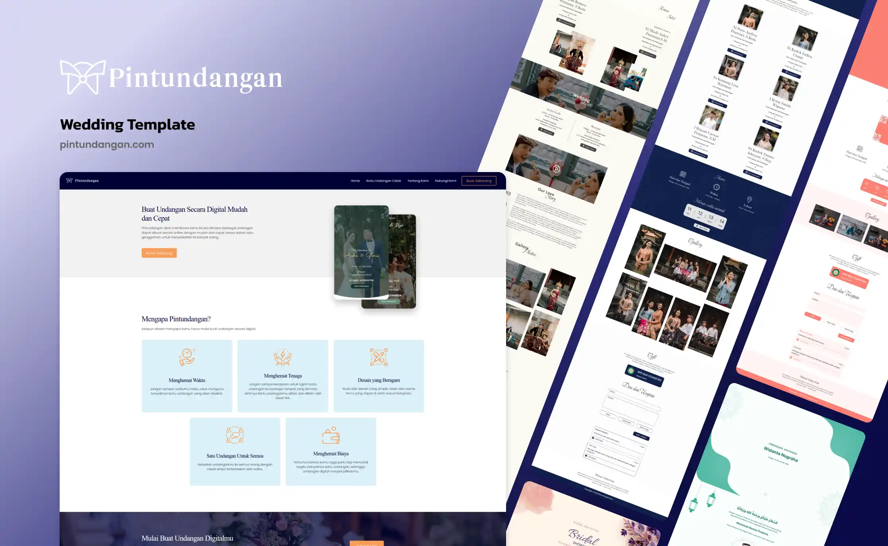

Kajian pengembangan sistem berbasis SaaS sebagai instrumen pelestarian kearifan lokal dalam menjawab tantangan distribusi undangan seremonial di era digital.

Pintundangan.com — Landing Page, tampil di Laptop, Tablet & Smartphone
Penelitian ini mengkaji peranan teknologi informasi dalam modernisasi tradisi mengundang pada masyarakat Indonesia yang kaya akan nilai seremonial dan budaya lokal. Proses distribusi undangan fisik secara konvensional menghadirkan berbagai inefisiensi operasional, meliputi keterbatasan jangkauan geografis, tingginya biaya cetak, serta minimnya representasi estetika budaya lokal pada platform digital yang telah ada. Melalui pendekatan pengembangan perangkat lunak dengan metode Waterfall, penelitian ini merancang dan mengimplementasikan platform SaaS bernama Pintundangan — sebuah sistem undangan digital interaktif yang mengintegrasikan ornamen kultural, manajemen tamu terpusat, serta fitur pemberian hadiah digital berbasis teknologi finansial (FinTech). Hasil implementasi menunjukkan bahwa pendekatan digitalisasi yang mengedepankan nilai estetika lokal mampu mempertahankan esensi kesopanan adat sekaligus meningkatkan efisiensi distribusi dan aksesibilitas bagi tamu di seluruh penjuru Indonesia. Temuan ini memperkuat tesis bahwa teknologi tidak bersifat disruptif terhadap tradisi, melainkan berfungsi sebagai katalis yang melestarikan dan memperluas jangkauan kearifan lokal di era digital.
Perkembangan teknologi informasi dan komunikasi (TIK) pada dekade terakhir telah melampaui batas-batas konvensional dan merambah ke hampir seluruh aspek kehidupan sosial-budaya manusia. Di Indonesia — sebagai negara dengan keragaman budaya terbesar di dunia — transformasi digital tidak hanya menyentuh sektor ekonomi dan pemerintahan, tetapi juga secara progresif mengubah cara masyarakat menjalankan tradisi dan ritual seremonial[1].
Salah satu tradisi yang mengakar kuat dalam ekosistem sosial-budaya Indonesia adalah praktik mengundang dalam rangkaian acara seremonial — mulai dari pernikahan adat Bali, akad nikah dan resepsi Islami, pemberkatan pernikahan Kristen, hingga upacara Manusa Yadnya seperti Otonan, Mepandes (potong gigi), dan Metatah. Proses mengundang bukan sekadar aktivitas logistik, melainkan merupakan tindak sosial yang sarat nilai: sebuah ekspresi penghormatan, pengakuan atas relasi sosial, dan pemeliharaan ikatan komunitas[2].
Namun, paradigma industri 4.0 yang ditandai oleh ledakan konektivitas internet telah mengakselerasi mobilitas penduduk secara luar biasa. Data Badan Pusat Statistik (BPS) mencatat penetrasi internet di Indonesia telah melampaui 78,19% pada tahun 2023[3], sebuah kondisi yang secara fundamental mengubah ekspektasi masyarakat terhadap cara informasi disampaikan — termasuk undangan.
Berhadapan dengan realitas tersebut, terdapat kesenjangan (gap) yang signifikan antara kebutuhan akan media undangan yang menghormati nilai kultural dengan ketersediaan solusi digital yang mampu merepresentasikannya secara autentik. Penelitian ini hadir untuk menjawab kesenjangan tersebut.
Undangan dalam konteks budaya Indonesia bukanlah sekadar pemberitahuan informatif. Ia merupakan medium komunikasi ritual yang memanggul beban simbolik. Dalam adat Bali, misalnya, proses nguopin — yakni kunjungan langsung dari rumah ke rumah — adalah manifestasi konkret dari konsep menyama braya (persaudaraan komunal)[4]. Ketidakhadiran dalam proses ini dianggap sebagai pengabaian terhadap norma sosial yang dapat merusak relasi antarkeluarga.
Pada dimensi yang lebih luas, praktik serupa ditemukan dalam kondangan atau metanjung — tradisi pemberian tali kasih sebagai wujud gotong royong finansial kepada keluarga penyelenggara. Dalam Islam, tradisi walimah mewajibkan penyebaran undangan seluas mungkin sebagai bentuk syiar kebahagiaan[5]. Seluruh praktik ini berbagi satu kesamaan: proses mengundang adalah inti dari ritual itu sendiri, bukan periferalnya.
Transformasi digital membawa konsekuensi yang paradoksal bagi tradisi mengundang. Di satu sisi, internet memungkinkan konektivitas tanpa batas geografis. Di sisi lain, urbanisasi dan diaspora masyarakat Indonesia ke berbagai penjuru dunia menjadikan kunjungan langsung dari pintu ke pintu sebagai sesuatu yang semakin tidak realistis secara logistik dan finansial. Laporan McKinsey Global Institute (2022) menyebutkan bahwa lebih dari 54% populasi Indonesia kini tinggal di wilayah perkotaan — angka yang terus meningkat setiap tahunnya[6].
Respons awal terhadap tantangan ini adalah kemunculan platform undangan digital generasi pertama. Namun, sebagian besar platform tersebut mengadopsi estetika desain Barat yang minimalis dan generik — sebuah pendekatan yang secara tidak langsung memarjinalkan representasi visual budaya lokal. Penelitian Sari dan Hakim (2021) menemukan bahwa 67% responden pengguna undangan digital di Bali menyatakan ketidakpuasan terhadap ketersediaan tema berbasis ornamen adat[7].
Berdasarkan pemaparan latar belakang di atas, terdapat tiga pokok permasalahan utama yang menjadi fokus penelitian ini:
Distribusi undangan secara konvensional (cetak dan door-to-door) menghadapi hambatan geografis yang signifikan. Biaya cetak undangan premium berkisar antara Rp 5.000 hingga Rp 25.000 per lembar, belum termasuk ongkos distribusi yang melonjak drastis untuk tamu di luar kota atau luar pulau[8]. Kondisi ini tidak hanya memberatkan penyelenggara secara finansial, tetapi juga berpotensi mengecualikan tamu yang berada di lokasi terpencil.
Platform undangan digital yang telah beredar di pasar Indonesia mayoritas mengadopsi template desain yang seragam dan bertendensi kebarat-baratan, mengabaikan kekayaan motif ornamental Nusantara. Desain yang tidak kontekstual ini berimplikasi pada hilangnya identitas budaya yang seharusnya terefleksi dalam medium undangan sebagai bagian dari ritual seremonial[7].
Pengelolaan daftar tamu, konfirmasi kehadiran (RSVP), serta tradisi pemberian hadiah (kondangan/metanjung) masih dilakukan secara terpisah melalui berbagai kanal komunikasi yang terfragmentasi. Kondisi ini menciptakan kekacauan administratif dan mengurangi kualitas pengalaman penyelenggara maupun tamu undangan[9].
Prasetyo dan Trisyanti (2018) mendefinisikan transformasi digital bukan sebatas adopsi teknologi, melainkan sebagai perubahan fundamental dalam cara organisasi dan individu menciptakan nilai[1]. Dalam konteks budaya, Shahbaz dan Baber (2022) berargumen bahwa teknologi digital dapat berfungsi sebagai cultural amplifier — memperkuat distribusi nilai budaya ke populasi yang lebih luas tanpa harus mendegradasi substansinya[10].
Software as a Service (SaaS) merupakan model distribusi perangkat lunak berbasis cloud di mana aplikasi di-host oleh penyedia dan diakses oleh pengguna melalui internet[11]. Keunggulan SaaS dalam konteks undangan digital terletak pada kemampuannya untuk menyediakan akses layanan tanpa instalasi, pembaruan otomatis, serta skalabilitas yang menyesuaikan kebutuhan penyelenggara — dari undangan skala keluarga kecil hingga acara adat berskala besar.
Pendekatan Human-Centered Design (HCD) menempatkan pengguna dan konteks sosial-budayanya sebagai titik tolak perancangan sistem[12]. Norman (2013) dalam "The Design of Everyday Things" menegaskan bahwa desain yang baik adalah desain yang memahami model mental penggunanya. Dalam konteks masyarakat Indonesia, model mental tersebut sangat dipengaruhi oleh nilai-nilai adat, tata krama, dan estetika kultural yang telah tertanam secara generasional.
Model Waterfall (Royce, 1970) merupakan metodologi pengembangan perangkat lunak sekuensial yang membagi proses menjadi fase-fase terstruktur: analisis kebutuhan, desain sistem, implementasi, pengujian, dan pemeliharaan[13]. Metode ini dipilih karena ruang lingkup kebutuhan Pintundangan dapat didefinisikan dengan jelas sejak awal, menjadikan pendekatan sekuensial lebih efisien dibandingkan metodologi agile yang lebih cocok untuk proyek dengan kebutuhan berubah-ubah.
Penelitian ini menggunakan metode pengembangan perangkat lunak Waterfall, dipilih karena ruang lingkup kebutuhan sistem yang telah terdefinisi dengan jelas sejak tahap awal. Metode ini memastikan setiap fase diselesaikan secara tuntas sebelum melanjutkan ke fase berikutnya, menghasilkan dokumentasi yang komprehensif dan produk yang terverifikasi secara bertahap[13].
Pengumpulan data primer melalui wawancara mendalam dengan penyelenggara acara adat Bali dan Islam di Denpasar dan Mataram, serta observasi terhadap platform undangan digital yang telah beredar di pasar. Keluaran fase ini adalah dokumen Spesifikasi Kebutuhan Perangkat Lunak (SKPL) yang mencakup kebutuhan fungsional dan non-fungsional sistem.
Perancangan arsitektur MVC menggunakan Laravel, skema database relasional MySQL, serta desain antarmuka menggunakan Figma. Fase ini menghasilkan wireframe, mockup interaktif, serta Entity Relationship Diagram (ERD) yang menjadi blueprint pengembangan. Digitalisasi ornamen kultural (motif ukiran Bali dan geometri Islam) dilakukan pada fase ini menggunakan Adobe Illustrator.
Pembangunan sistem menggunakan stack teknologi: PHP 8.x (Laravel 10), MySQL, JavaScript (Alpine.js), dan Tailwind CSS. Integrasi dilakukan terhadap API WhatsApp Business untuk distribusi massal, API QRIS/payment gateway untuk amplop digital, serta sistem DNS untuk pengelolaan personalized URL per undangan.
Pengujian dilakukan menggunakan metode Black-Box Testing untuk memverifikasi fungsi-fungsi utama sistem (RSVP, amplop digital, papan ucapan, distribusi WhatsApp), serta Usability Testing dengan 15 pengguna representatif untuk mengukur kemudahan penggunaan dan ketepatan representasi kultural.
Pembaruan iteratif berdasarkan umpan balik pengguna pasca-peluncuran, pemantauan performa server, serta penambahan tema kultural baru secara berkala untuk memperluas cakupan representasi adat Nusantara pada platform.
Pintundangan adalah platform SaaS penyedia layanan undangan digital interaktif yang dirancang secara khusus untuk memfasilitasi kebutuhan seremonial masyarakat Indonesia. Nama "Pintundangan" merupakan portmanteau dari kata "pintu" dan "undangan" — sebuah metafora bahwa undangan digital ini adalah pintu virtual yang membuka akses kehadiran dan doa restu tamu tanpa batasan geografis.
Berbeda dari platform sejenis yang bersifat generik, Pintundangan mengadopsi filosofi desain culturally-responsive — setiap elemen visual, hierarki informasi, dan alur interaksi dirancang dengan mempertimbangkan norma sosial dan estetika adat yang berlaku pada masing-masing jenis upacara. Platform ini mengakomodasi kompleksitas acara adat melalui tata letak informasi berlapis, galeri visual dinamis, serta pengelolaan daftar tamu terpusat dalam satu tautan eksklusif yang dipersonalisasi.
Pendekatan desain antarmuka dijalankan melalui proses presisi menggunakan Figma — dari wireframe hingga prototipe interaktif berujung tinggi (high-fidelity prototype). Tiga pilar desain utama yang diterapkan adalah:
① Tipografi dan Hierarki Visual: Kombinasi huruf serif klasik untuk nama pemilik acara dengan huruf sans-serif modern untuk detail logistik (waktu dan lokasi), mencapai tingkat keterbacaan
maksimal pada layar kecil tanpa kehilangan nuansa seremonial.
② Digitalisasi Ornamen Lokal: Motif ukiran Bali (pepatraan, keketusan) serta geometri Islami (girih) dirancang ulang sebagai aset vektor beresolusi tinggi
(SVG/PDF), memastikan ornamen tampil tajam di seluruh resolusi layar tanpa artefak kompresi.
③ Mobile-First Design: Lebih dari 90% tamu mengakses undangan melalui perangkat seluler. Seluruh tata letak tema dioptimalkan untuk navigasi satu tangan, dengan tombol interaktif berukuran
minimum 44×44px sesuai standar aksesibilitas WCAG 2.1.
Pintundangan mengimplementasikan arsitektur Model-View-Controller (MVC) menggunakan PHP (Laravel) dengan pengelolaan basis data relasional MySQL. Pemilihan Laravel didasari oleh ekosistem yang matang, dukungan ORM (Eloquent) untuk query database yang ekspresif, serta sistem routing yang memungkinkan generasi URL yang dipersonalisasi per tamu.
Integrasi layanan eksternal mencakup: (1) WhatsApp Business API untuk distribusi undangan massal dengan pesan yang dipersonalisasi per nama tamu, (2) Payment Gateway dan QRIS untuk fitur amplop digital, serta (3) layanan cloud storage untuk manajemen aset media galeri foto/video acara.
Tamu yang berhalangan hadir secara geografis tetap dapat menyampaikan doa restu melalui pesan digital yang tampil dan bergulir secara real-time di halaman undangan, menggantikan tradisi nguopin dengan medium digital yang hangat.
Setiap tamu menerima tautan undangan yang dipersonalisasi dengan namanya melalui WhatsApp, mempertahankan nuansa keakraban dan penghormatan personal dalam distribusi digital berskala besar.
Barcode QRIS, nomor rekening bank, dan dompet digital dibungkus dalam desain pop-up yang discreet — hanya tampil saat tamu mengklik tombol hadiah, menjaga etika kesopanan adat ketimuran yang tidak mengedepankan materi secara eksplisit.
Dashboard terpusat bagi penyelenggara untuk memantau konfirmasi kehadiran secara real-time, mengelompokkan tamu, dan mengekspor data untuk kebutuhan logistik acara seperti pengaturan tempat duduk dan estimasi katering.
Hadirnya Pintundangan tidak hanya berdampak pada efisiensi operasional penyelenggara acara, tetapi juga memberikan implikasi yang lebih dalam terhadap ekosistem budaya di mana tradisi mengundang beroperasi. Analisis dampak ini dibagi ke dalam tiga dimensi:
Dengan mengintegrasikan ornamen dan motif adat secara autentik ke dalam medium digital, Pintundangan menjalankan fungsi sebagai digital cultural repository — arsip visual kearifan lokal yang terus bersirkulasi setiap kali sebuah undangan dibagikan. Setiap tamu yang membuka tautan undangan secara tidak langsung mengonsumsi representasi estetika budaya leluhur, menciptakan eksposur kultural yang organik[4].
Kondisi ini relevan dengan konsep intangible cultural heritage yang dirumuskan UNESCO (2003), bahwa pelestarian warisan budaya takbenda membutuhkan adaptasi medium — bukan pembekuan bentuk[14]. Digitalisasi tradisi mengundang melalui Pintundangan merupakan wujud nyata dari adaptasi medium tersebut.
Distribusi undangan digital yang dapat menjangkau tamu di seluruh penjuru Indonesia — bahkan dunia — secara fundamental mengubah dinamika inklusivitas dalam ritual seremonial. Tamu yang sebelumnya secara praktis "terpaksa" tidak diundang karena kendala logistik distribusi fisik, kini dapat dilibatkan dalam perayaan melalui platform digital. Hal ini memperluas jaringan doa dan harapan yang mengiringi sebuah perayaan adat.
Transisi dari undangan fisik ke undangan digital memberikan dampak lingkungan yang terukur. Dengan asumsi rata-rata 300 lembar undangan per acara dan konsumsi kertas 5 gram per lembar, satu acara tunggal yang beralih ke digital mengeliminasi 1,5 kg kertas. Dalam skala platform dengan ribuan pengguna per tahun, dampak kumulatif terhadap pengurangan limbah kertas menjadi signifikan secara ekologis[15].
Memangkas biaya cetak dan distribusi undangan fisik premium hingga jutaan rupiah per acara, mengalihkan anggaran ke kualitas penyelenggaraan.
Mengeliminasi penggunaan kertas, plastik laminasi, dan emisi karbon dari distribusi fisik, menuju penyelenggaraan acara yang berkelanjutan.
Perubahan jadwal, venue, atau informasi lainnya dapat diperbarui secara langsung tanpa perlu mencetak ulang dan mendistribusikan kembali.
Setiap undangan yang dibagikan menjadi medium penyebaran estetika kultural — ornamen adat Nusantara hadir di layar smartphone jutaan pengguna, menciptakan eksposur kultural yang organik dan berkelanjutan.
Penelitian ini telah membuktikan bahwa dikotomi antara "teknologi" dan "tradisi" adalah sebuah konstruksi yang keliru. Melalui pengembangan platform Pintundangan, telah didemonstrasikan secara empiris bahwa teknologi informasi — apabila dirancang dengan kepekaan kultural yang mendalam — mampu berfungsi sebagai instrumen pelestarian, bukan sebagai kekuatan yang mengikis nilai-nilai leluhur.
Implementasi sistem informasi pada Pintundangan membuktikan bahwa dengan menggabungkan pemahaman mendalam terhadap System Architecture, Database Management, UI/UX Design, dan nilai-nilai kearifan lokal — tradisi mengundang yang telah berusia ratusan tahun kini berevolusi menjadi lebih terstruktur, inklusif, dan relevan di era digital, tanpa kehilangan esensi penghormatan dan persaudaraan yang menjadi jiwanya.
Lebih jauh, penelitian ini memberikan kontribusi konseptual terhadap wacana digital humanities di Indonesia: bahwa transformasi digital kebudayaan tidak harus — dan tidak seharusnya — berarti homogenisasi estetika global. Sebaliknya, teknologi menyediakan kanvas yang lebih luas bagi keberagaman ekspresi budaya Nusantara untuk dilihat, dinikmati, dan diwariskan.
Sebagai rekomendasi pengembangan ke depan, penelitian lanjutan dapat difokuskan pada: (1) integrasi kecerdasan buatan untuk personalisasi rekomendasi tema berdasarkan profil budaya pengguna, (2) pengembangan fitur live streaming terpadu untuk memfasilitasi kehadiran virtual tamu jarak jauh, serta (3) ekspansi cakupan ornamen kultural ke seluruh 34 provinsi di Indonesia untuk mewujudkan representasi Nusantara yang komprehensif.
Penulisan mengacu pada format APA 7th Edition. Tautan disediakan sebagai referensi akses digital.